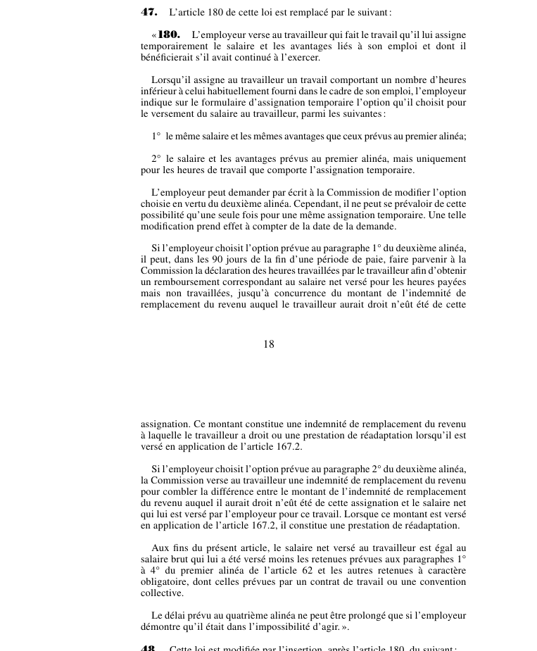

art-47-LMRSST : modifie l'art. 180 LATMP
Article modificateur de la LMRSST (L.Q. 2021, c. 27). Il s'agit d'une modification apportée à la LATMP.
- Remplace intégralement art. 180 LATMP par un nouveau texte.
📄 PDF officiel (page 18) · 🌐 LegisQuébec
Texte officiel
L’article 180 de cette loi est remplacé par le suivant :
« 180. L’employeur verse au travailleur qui fait le travail qu’il lui assigne temporairement le salaire et les avantages liés à son emploi et dont il bénéficierait s’il avait continué à l’exercer.
Lorsqu’il assigne au travailleur un travail comportant un nombre d’heures inférieur à celui habituellement fourni dans le cadre de son emploi, l’employeur indique sur le formulaire d’assignation temporaire l’option qu’il choisit pour le versement du salaire au travailleur, parmi les suivantes :
1° le même salaire et les mêmes avantages que ceux prévus au premier alinéa;
2° le salaire et les avantages prévus au premier alinéa, mais uniquement pour les heures de travail que comporte l’assignation temporaire.
L’employeur peut demander par écrit à la Commission de modifier l’option choisie en vertu du deuxième alinéa. Cependant, il ne peut se prévaloir de cette possibilité qu’une seule fois pour une même assignation temporaire. Une telle modification prend effet à compter de la date de la demande.
Si l’employeur choisit l’option prévue au paragraphe 1° du deuxième alinéa, il peut, dans les 90 jours de la fin d’une période de paie, faire parvenir à la Commission la déclaration des heures travaillées par le travailleur afin d’obtenir un remboursement correspondant au salaire net versé pour les heures payées mais non travaillées, jusqu’à concurrence du montant de l’indemnité de remplacement du revenu auquel le travailleur aurait droit n’eût été de cette assignation. Ce montant constitue une indemnité de remplacement du revenu à laquelle le travailleur a droit ou une prestation de réadaptation lorsqu’il est versé en application de l’article 167.2.
Si l’employeur choisit l’option prévue au paragraphe 2° du deuxième alinéa, la Commission verse au travailleur une indemnité de remplacement du revenu pour combler la différence entre le montant de l’indemnité de remplacement du revenu auquel il aurait droit n’eût été de cette assignation et le salaire net qui lui est versé par l’employeur pour ce travail. Lorsque ce montant est versé en application de l’article 167.2, il constitue une prestation de réadaptation.
Aux fins du présent article, le salaire net versé au travailleur est égal au salaire brut qui lui a été versé moins les retenues prévues aux paragraphes 1° à 4° du premier alinéa de l’article 62 et les autres retenues à caractère obligatoire, dont celles prévues par un contrat de travail ou une convention collective.
Le délai prévu au quatrième alinéa ne peut être prolongé que si l’employeur démontre qu’il était dans l’impossibilité d’agir. ».
Texte de l’article 47 LMRSST, extrait de la couche texte du PDF officiel (page 18), sans OCR ni retouche. La capture ci-dessous et le PDF font foi.
{kind=link}

Toucher l'image pour l'agrandir🔗 Ouvrir a cette page : LMRSST.pdf : page 18
- Remplace intégralement art. 180 LATMP par un nouveau texte.
Portée et effet
Adopté dans le cadre de la réforme de 2021 modernisant le régime de santé et de sécurité du travail, l'article 47 de la LMRSST remplace art. 180 LATMP. Le texte en vigueur de la disposition visée intègre désormais cette modification ; le libellé exact figure dans la capture officielle ci-dessus. Le chapitre I de la LMRSST réforme la LATMP : comité scientifique des maladies professionnelles, réadaptation et retour au travail, indemnités, procédures et recours.
La jurisprudence porte sur la disposition modifiée, art. 180 LATMP, et non sur l'article modificateur lui-même (les décisions et leurs PDF sont rassemblés sur la page de cet article).
Voir aussi
- 🎯 Article(s) modifié(s) : art. 180 LATMP · modalités assignation.
- 🗓️ Entrée en vigueur : 6 octobre 2022 (partiel : voir art. 313 ¶2) (voir art. 313 LMRSST)
- 📚 Chapitre : Chap. I : modifications à la LATMP
- ↑ Loi : LMRSST
Pages qui pointent ici (2)
- art-180-LATMP : salaire versé pendant l'assignation temporaire Recueil législatif
- LMRSST : Chapitre I : Modifications à la LATMP Recueil législatif